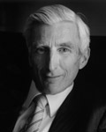
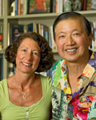
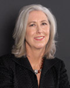
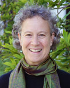

2012 Founders Celebration Honorees
-
Foundation Medal
For outstanding contributions to research that have helped shape our understanding of the universe.
Martin Rees
Martin Rees is the United Kingdom’s Astronomer Royal and has just completed eight years as Master of Trinity College, Cambridge. He has been president of the Royal Society, a fellowship of the world’s most eminent scientists, and is a member of the House of Lords. For 10 years he directed the Institute of Astronomy at Cambridge.
Besides his research papers on cosmology and high energy astrophysics, he has penned numerous articles on scientific and general subjects. The latest of his eight books is From Here to Infinity: A Vision of 21st Century Science.
-
Foundation Medal
For their leadership in philanthropy and support for programs, particularly in science and the environment, that create transformative change.

Gordon and Betty Moore
Gordon Moore is co-founder of Intel Corporation and chairman emeritus of the corporation’s Board of Directors. A California native, he also co-founded Fairchild Semiconductor in 1957. He earned his B.S. in chemistry from UC Berkeley and his Ph.D. in chemistry and physics from the California Institute of Technology. He is a longtime philanthropist and founder of the Gordon and Betty Moore Foundation. He received the Presidential Medal of Freedom, the nation’s highest civilian honor, in 2002.
Betty Moore was born in Los Gatos and raised on a fruit ranch. She received her B.A. in journalism from San Jose College (where she met Gordon). She worked for Consolidated Engineering Corporation and joined the Ford Foundation before the birth of the couple’s two sons, Kenneth and Steven. An outdoors enthusiast, she also was active on the board of El Camino Hospital in Mountain View and volunteered at the Palo Alto Senior Day Care Center. She is also founder of the Gordon and Betty Moore Foundation.
-
Fiat Lux Award
For their long-term commitment to and involvement in the community, their generous giving to scholarships and the arts, and their loyal support of UC Santa Cruz.
George Ow Jr. and Gail Michaelis-Ow
George Ow is a native Santa Cruzan, businessman, publisher and boogie boarder who spent his early years in the former Chinatown on the banks of the San Lorenzo River. He received his M.B.A from UCLA and has established many of Santa Cruz County’s landmark developments and businesses.
Gail Michaelis-Ow came to Santa Cruz in 1970 to attend UC Santa Cruz and stayed. She is a nurse practitioner at Planned Parenthood and also served on the UC Foundation and Shakespeare Santa Cruz boards. The Ows have been major sponsors of Shakespeare Santa Cruz, along with funding many scholarships and cultural events in the community.
-
Alumni Achievement Award
For her groundbreaking research and writing on health care and policy, particularly avoidable care.
Shannon M. Brownlee
Shannon M. Brownlee (College Eight 1979 Biology, 1983 M.S. Marine Sciences) is a writer and essayist whose groundbreaking work on health-care issues has appeared in major newspapers and magazines across the country. Her book, Overtreated: Why Too Much Medicine is Making Us Sicker and Poorer, was a semi-finalist for the National Book Award. Her current research focuses on health-care costs and delivery system reform.
Brownlee is acting director of the New America Health Policy Program at the non-partisan think tank New America Foundation, and an instructor at the Dartmouth Institute for Health Policy and Clinical Practice.
-
Faculty Research Lecturer
For pioneering field research and oral history among Chinese women, and her major contributions to the history of women, labor, and sexuality.
Gail Hershatter
Gail Hershatter is a specialist in Modern Chinese social and cultural history who has pioneered field research and oral history among Chinese women. Her books have covered topics including the formation of the working class in Tianjin in Northern China, prostitution in Shanghai, and the construction of socialism in China in the ’50s and ’60s. She has helped develop feminist theory and has made major contributions to women’s history.
During her 21 years at UCSC, Hershatter also has served as director of the Institute for Humanities Research and co-director of the Center for Cultural Studies on campus.